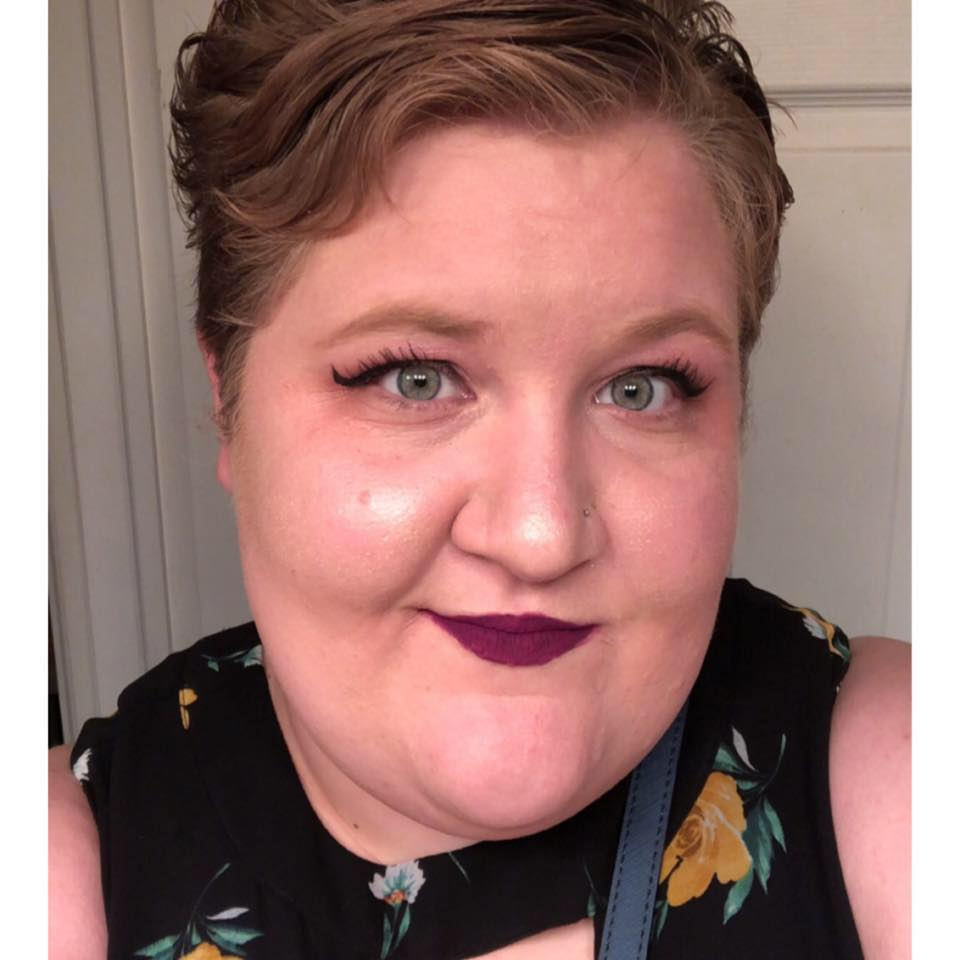
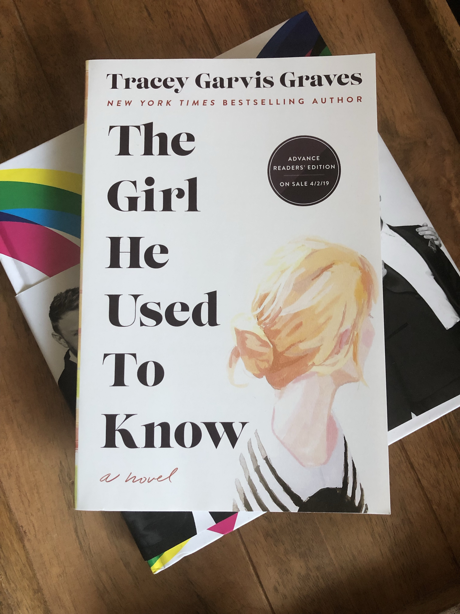

To All the Books I've Read Before
To All The Books I've Read Before
If the books you read, knew what you thought.
When freelance writer Nikole Paterson goes to a Dodgers game with her actor boyfriend and his bros, the last thing she expects is a scoreboard proposal...
Seraphine Mayes and her twin brother Danny were born in the middle of summer at their family’s estate on the Norfolk coast. Within hours of their birth, their mother threw herself from the cliffs, the au pair fled, and the village thrilled with whispers of dark cloaks, changelings, and the aloof couple who drew a young nanny into their inner circle.
The Girl He Used to Know

Annika (rhymes with Monica) Rose is an English major at the University of Illinois. Anxious in social situations where she finds most people's behavior confusing, she'd rather be surrounded by the order and discipline of books or the quiet solitude of playing chess.
- Recently Read:
- The Au Pair By Emma Rous
- The Girl He Used To Know By Tracy Garvis Graves
- Still Me By Jojo Moyes
- Refinery29 Money Diaries by Lindsey Stanberry
- Everybody, Always by Bob Goff